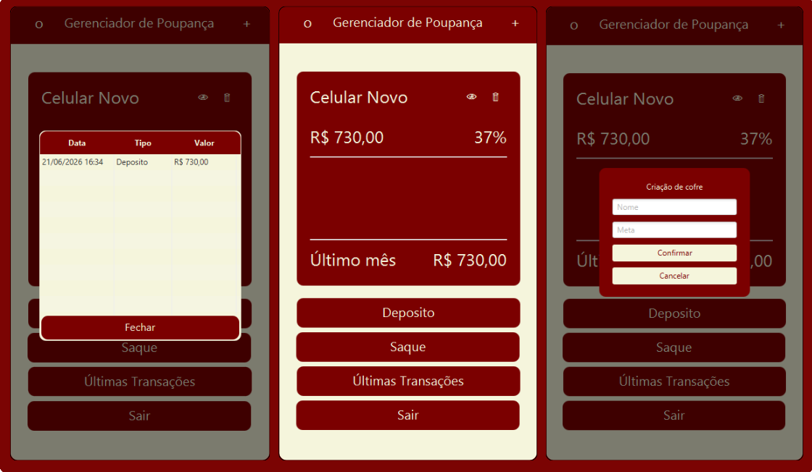

Js
Gerenciador de Poupanças
Aplicação desktop desenvolvida em JAVA com JavaFX para gerenciamento de cofres de poupança.

Permite criar, visualizar e excluir cofres, além de realizar depósitos e saques com controle de percentual atingido. Todos os dados são persistidos localmente em um banco de dados SQLite, garantindo que as informações sejam mantidas entre sessões
Desenvolvido como projeto pessoal para aprendizado de JAVA , JavaFX e integração com Banco de Dados Relacional.
Tecnologias
- - JAVA
- - JavaFX
- - SQLite
- - CSS
Funcionalidades
- - Criar e excluir cofres
- - Depósito e saque
- - Visualização de saldo com toggle de privacidade
- - Controle de meta e percentual atingido
- - Persistência em banco de dados
- - Histórico completo
- - Ajustes de interface